Re-rendering the paper's planning examples on the table scene of the guided_playback renderer (pyrender, 640x480, no arm). Each strip: left = the world model's generated rollout, right = the simulator replay of the committed plan. Same camera for every method on an episode. Green ball = target. Magenta = simulated cube-centroid trace, frame 0 to the last frame.
The run behind the corrected number: 3.90 ± 2.32 cm final distance, 53.8% of the distance closed, 44.7 s per plan on an L40S. Six of its 50 episodes: the two best, two near the median and the two worst by simulated distance. Each shows the member the planner picked by its imagined objective, replayed in SAPIEN with the cube spawned at the scenario's orientation.
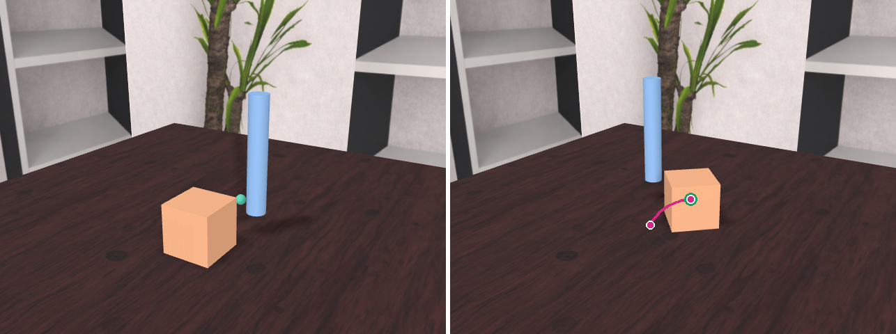
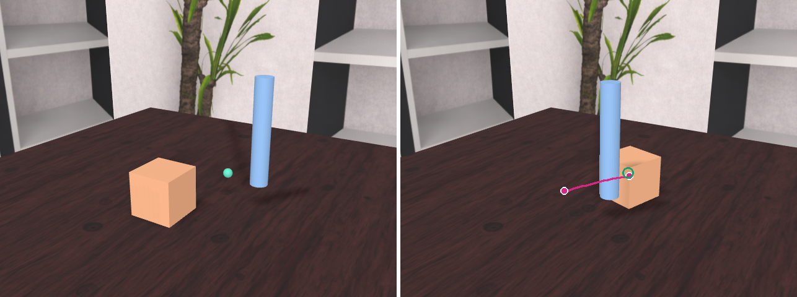
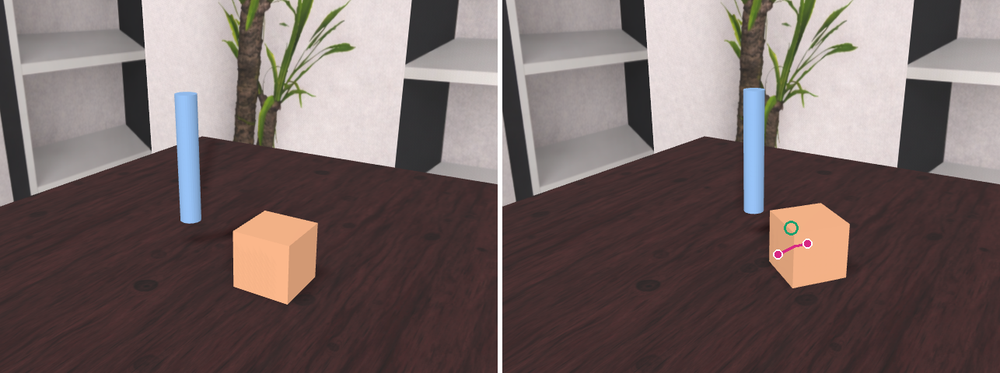
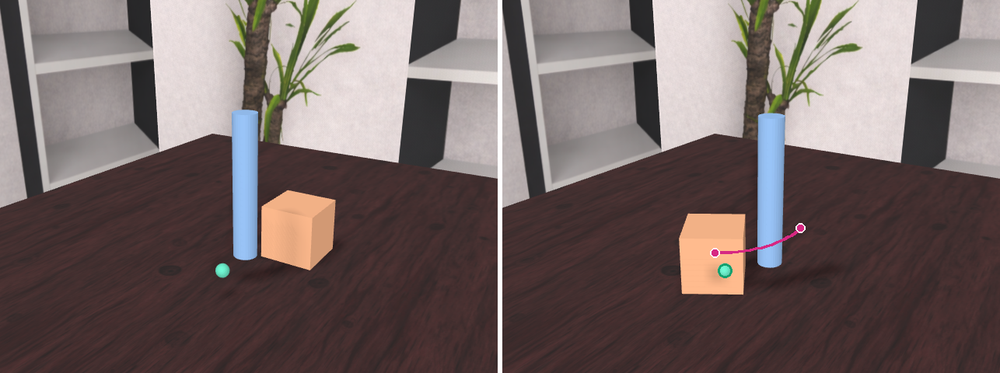
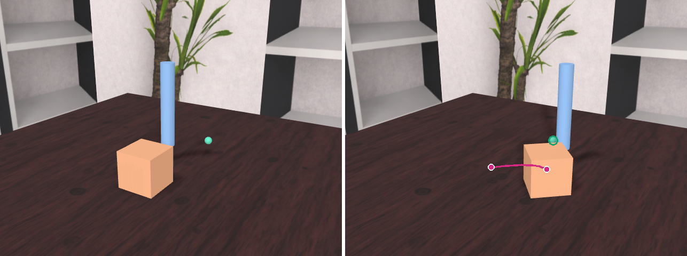
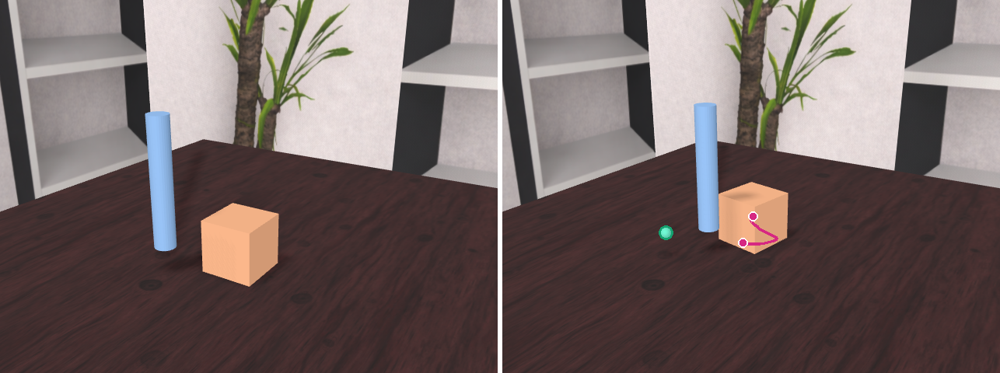
runs: /data/user_data/mbronars/packages/guided_playback/runs/pushing/pushhard42_lr0.2_tf0.5_fixedfps_pop13_l40s_epNNN (render_sapien_yawfix/, render_sapien_yawfix_keyframes/, replay_sapien_yawfix/)
summary: /data/user_data/mbronars/packages/guided_playback/runs/_paper_eval/pushhard42_lr0.2_tf0.5_fixedfps_pop13_l40s_yawfix_summary.json
Same plans as below; only the simulator's object collision shape changed, from one convex hull of the particles to the asset's own convex decomposition posed at frame 0 (bowl asset_0037, pose fitted to the frame-0 particles at 1.28 mm rms). This path is taken only by runs with task = place; the pick benchmark replay is unchanged.
| member | guided, generated | guided, Isaac (decomposition) | guided, Isaac (single hull, below) | unguided, generated | unguided, Isaac (decomposition) |
|---|---|---|---|---|---|
| m0 | 6.7 mm | 15.8 mm | 92.1 mm | 134.0 mm | 147.7 mm |
| m1 (planner's pick) | 5.3 mm | 29.3 mm | 92.0 mm | 76.1 mm | 50.4 mm |
| m2 | 7.7 mm | 22.3 mm | 92.4 mm | 81.8 mm | 103.9 mm |
| m3 | 10.5 mm | 15.6 mm | 90.3 mm | 74.2 mm | 101.7 mm |
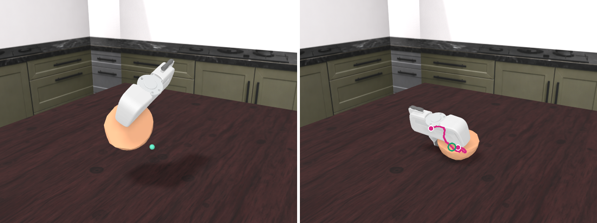
replay: /data/user_data/mbronars/packages/guided_playback/runs/pickup/place1_val00_t0/replay_isaac (decomposition), replay_isaac_convexhull (the earlier single-hull replay), render_isaac/, render_isaac_keyframes/
asset index: /data/user_data/mbronars/packages/guided_playback/sweeps/place_val_index.json (bin/build_place_index.py); hulls: gp/replay/place_assets.py; branch: gp/replay/isaac_float.py (task == place only)
Replicates the pick benchmark protocol with a held start: the episode's frame 0 has the object in the closed gripper 107 mm above the table. Target = object centroid + (dx, dy) with the pick-benchmark offset t0 (-15, +119 mm), z chosen so the object's lowest point sits on the table (table z = 0.0115 m, the median resting height in this split). Planner defaults from the pick benchmark: population 4, Adam lr 0.1, 10 iterations, 60 transitions, S = 10, shell on, seed 0. Isaac replay with the table at 0.0115 m.
| member | unguided, generated | guided, generated (best) | guided, Isaac | object moved in Isaac | Isaac object z at frame 0 |
|---|---|---|---|---|---|
| m0 | 134.0 mm | 6.7 mm | 92.1 mm | 20.5 mm | 48 mm (on the table) |
| m1 | 76.1 mm | 5.3 mm | 92.0 mm | 20.6 mm | 48 mm (on the table) |
| m2 | 81.8 mm | 7.7 mm | 92.4 mm | 20.3 mm | 48 mm (on the table) |
| m3 | 74.2 mm | 10.5 mm | 90.3 mm | 21.2 mm | 48 mm (on the table) |
In Isaac the object is already resting on the table at frame 0 (centroid z 48 mm, lowest point 12 mm) and stays within 21 mm of where it landed; the hand follows the plan to within 3 mm.
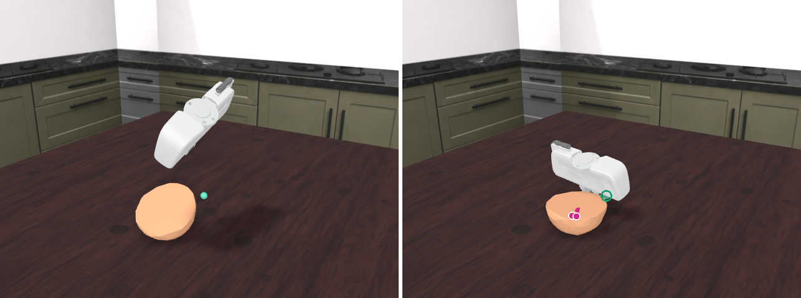
run: /data/user_data/mbronars/packages/guided_playback/runs/pickup/place1_val00_t0 (rollout.npz, result.json, replay_isaac/, render_isaac/ m0-m3 guided+unguided, render_isaac_keyframes/)
episode list: /data/user_data/mbronars/packages/guided_playback/sweeps/place_val_candidates.json (24 place-success val episodes with frame-0 and last-frame facts)
code: gp/session.py task "place" + table_z; gp/adapters/clean_pickup.py GP_PICKUP_ROOTS; pickup_replay_isaac/scripts/replay_isaac.py --table_z; gp/render/frames.py table height for place runs
log: logs/place1_val00_t0.log, logs/place1_val00_t0_replay.log
| method | generated cube to target | SAPIEN replay cube to target | left panel |
|---|---|---|---|
| Ours (guided diffusion, pop3 gw2 run) | 15.7 mm | 9.6 mm | generated particle cloud |
| GNS (best of 256 rollouts) | 59.5 mm | 49.9 mm | generated particle cloud |
| PointWorld (MPPI in WM, K=128) | 72.2 mm | 72.4 mm | template cube and rod posed by the imagined centroid tracks (PointWorld saved no imagined cloud) |
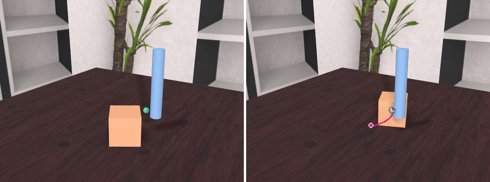
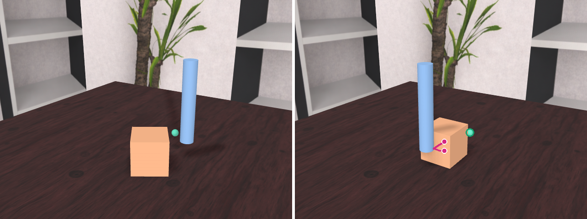
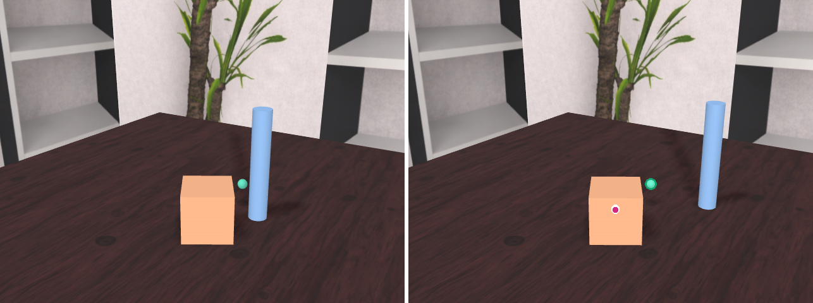
run folders: /data/user_data/mbronars/packages/guided_playback/runs/pushing/paper_may_{ours,gns,pointworld}_hard42_ep11 (render_sapien/ gif + png, render_sapien_keyframes/)
source episodes: /data/user_data/mbronars/packages/pwm_final_paper/results/block_pushing/{ours_paper_video_source_pop3_gw2_lookaheads/runs/seed42_ep11, gns/runs/ep011, pointworld/runs/ep_011}
adapter: /data/user_data/mbronars/packages/guided_playback/bin/paper_case_to_run.py; renderer option --camera_from added to bin/render.py